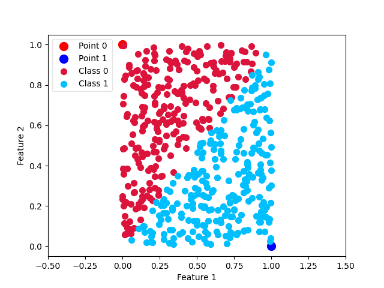

Note
Click here to download the full example code
Classifier example¶
Rank similarity classifier is best at large datasets with multiple features but can still be used with few features if they have a fixed rank order.
import numpy as np
from matplotlib import pyplot as plt
from ranksim import RankSimilarityClassifier
X = [[0, 1], [1, 0]]
y = [0, 1]
clf = RankSimilarityClassifier()
clf.fit(X, y)
rng = np.random.RandomState(13)
X_test = rng.rand(500, 2)
y_pred = clf.predict(X_test)
X_0 = X_test[y_pred == 0]
X_1 = X_test[y_pred == 1]
p0 = plt.scatter(0, 1, c='red', s=100)
p1 = plt.scatter(1, 0, c='blue', s=100)
ax0 = plt.scatter(X_0[:, 0], X_0[:, 1], c='crimson', s=50)
ax1 = plt.scatter(X_1[:, 0], X_1[:, 1], c='deepskyblue', s=50)
leg = plt.legend([p0, p1, ax0, ax1],
['Point 0', 'Point 1', 'Class 0', 'Class 1'],
loc='upper left', fancybox=True, scatterpoints=1)
leg.get_frame().set_alpha(0.5)
plt.xlabel('Feature 1')
plt.ylabel('Feature 2')
plt.xlim([-.5, 1.5])
plt.show()
Total running time of the script: ( 0 minutes 0.130 seconds)